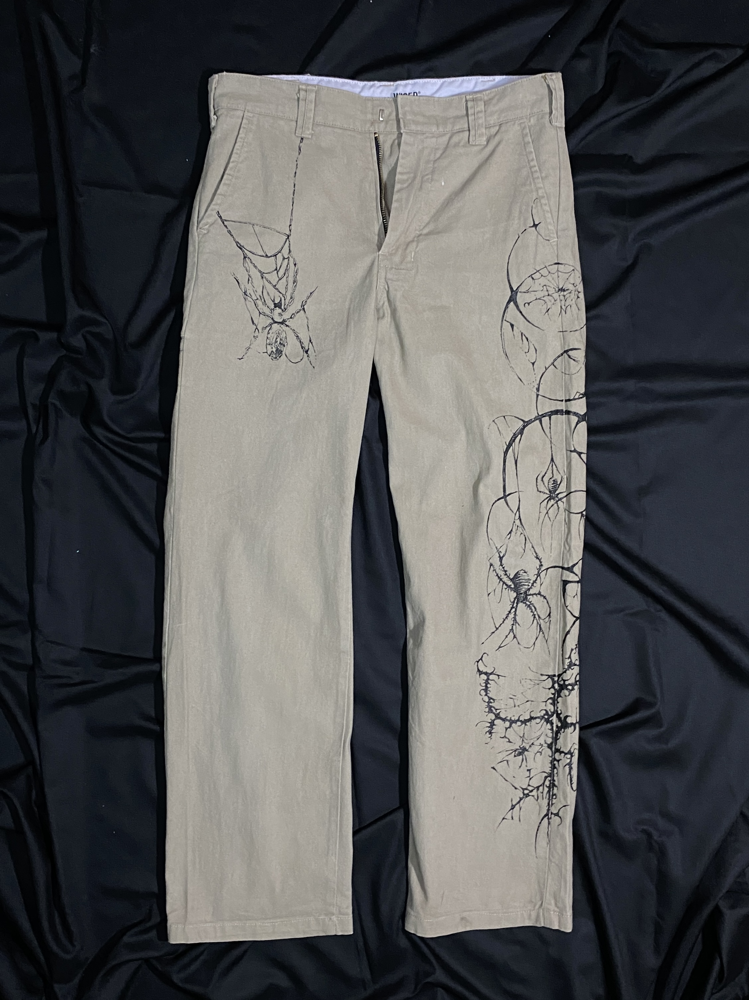
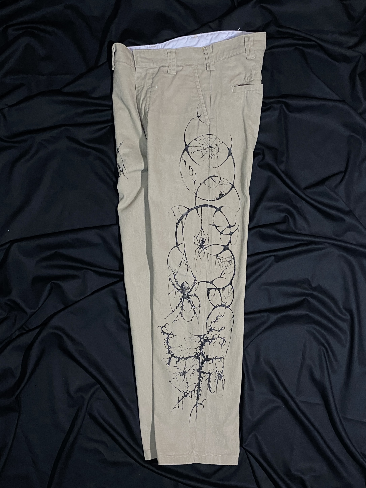
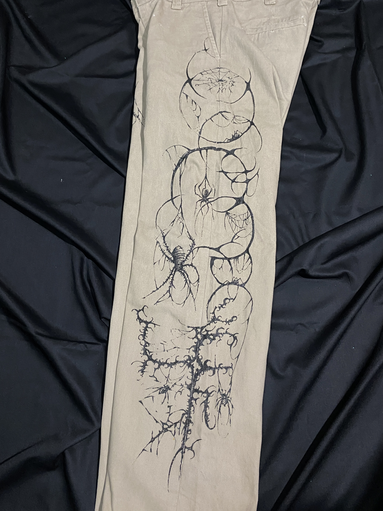

wised brand chino
I chose the spider for its dark, mystical presence, paired with spiral sigils that symbolize energy and transformation. Together, they create a piece inspired by mysticism, symbolism, and the unseen.
shoutout @_ryuzi__
Back to Collection